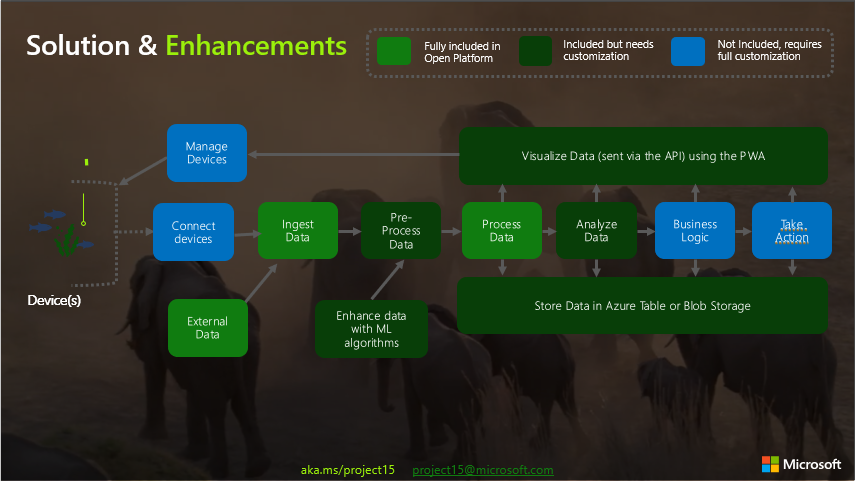
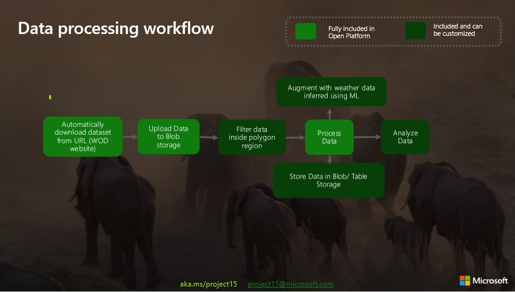
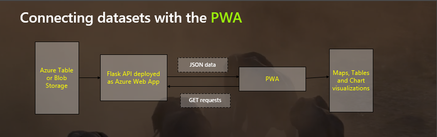

System architecture
The following diagram summarizes our solution and potential enhancements. One big improvement would be developing better ML models for augmenting data, which can be done without changing the overall infrastructure. Additionally, real data from IoT devices can be connected to the existing workflow. Using the PWA insights, different actions can be taken, such as managing the devices.
Data processing
The following diagram shows the data processing workflow. The dataset is automatically downloaded from the WOD URLs, then uploaded to Azure Blob Storage.
From there, it can be filtered to contain only the information of locations inside a customizable polygon. At this point, it can be augmented with weather data using our simple ML model.
After it's processed, the data can be stored in Azure Table Storage and/or used for analysis.
Data Storage
As mentioned above, the data will be stored in Azure Table Storage.
For details about the data schema, please check the dataSchema file in our GitHub repository https://github.com/Project15Invictus/MicrosoftProject15_Invictus.git .
Sending and Retrieving data
To connect the data with the PWA without inefficiently storing it in the browser, we implemented a Python Flask API. When the PWA sends GET requests for data, they are redirected to the API. The API will then get data from Azure storage and serve it back to the PWA as JSONs. The PWA will then process the response and display various visualizations.
The following diagram illustrates communication via the API:
